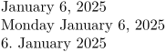
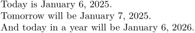
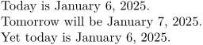
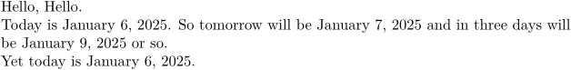

Contents
Summary
The command
\currentdate
typesets the current date.
Settings
| \currentdate[...,...] | |
| [...,...] | year year:name y y:name yy Y Y:name YY month month:mnem month:hebrew month:jalali m m:mnem m:hebrew m:jalali MONTH MONTH:mnem MONTH:hebrew MONTH:jalali mm M day day:name day:+ day:ord day:++ day:highord d d:name d:+ d:ord d:++ d:highord dd dd:+ dd:ord dd:++ dd:highord D D:+ D:ord D:++ D:highord weekday weekday:mnem weekday:hebrew weekday:jalali w w:mnem w:hebrew w:jalali WEEKDAY WEEKDAY:mnem WEEKDAY:hebrew WEEKDAY:jalali W referral space \\\\\\\\␣ text hebrew:to jalali:to jalali:from |
| Option | Explanation |
|---|---|
| This format is a comma-separated list of field formats and optional separators. | |
Settings name
Description
The command
\currentdate
typesets the current date using a supplied format.
Examples
Example 1: The Current Date
-
\currentdate \currentdate[weekday,month,day,{, },year] \currentdate[day,{.~},month,{~},year]
gives
- 
Example 2: Incrementing and Decrementing the Current Date
-
Today is \currentdate. \increment\normalday Tomorrow will be \currentdate. \decrement\normalday %\increment\normalmonth% -- gives an error as of 08-2023 \increment\normalyear And today in a year will be \currentdate.
gives
- 
Example 3: Incrementing and Decrementing the Current Date Locally
-
Today is \currentdate. \start\increment\normalday Tomorrow will be \currentdate. \stop Yet today is \currentdate.
gives
- 
Example 4: Incrementing and Decrementing the Current Date by N
-
Hello\dorecurse{1}{, Hello}. Today is \currentdate. \start\increment\normalday So tomorrow will be \currentdate \stop \start\dorecurse{3}{\increment\normalday} and in three days will be \currentdate\ or so. \stop Yet today is \currentdate.
gives
- 
(Side-note the usage of line breaks and blank lines in the source code and how they alter the PDF product.)
Example 5: More Complex Usage
-
\definedate[short][month,{,~},day] \definedate[long][{the },day:++,{ of },month,{ in the year of },year] \def\Today{\currentdate[long]} % \def = \defineexpandable % {...} = \start ...\stop \defineexpandable[2]\Later{% \start\dorecurse{#1}{\increment\normalday}% \currentdate[#2]% \stop } Today is \Today\ one should believe. So tomorrow will be \Later{1}{short}. And in three days should be \Later{3}{long} or so.
gives
-

Note the usage of commenting (using the percent sign [%]) to avoid unwanted spacing that occurs when using line breaks, especially within brackets (e.g. \start ... \stop).
Notes
See also
- core-con.mkiv
- \date for more details about the formatting options
- \definedate